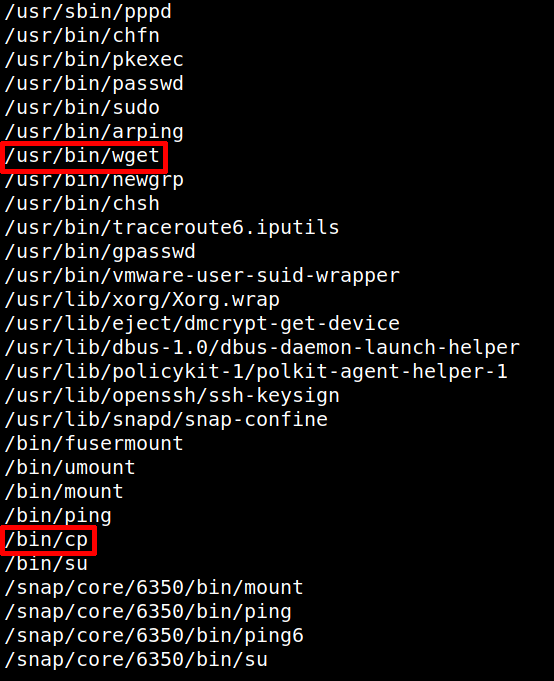

5.2 Check for any file having SUID permissions
1. Enumerate all binaries having SUID permissions.
www-data@ubuntu:/home/raj$find / -perm -u=s -type f 2>/dev/null
Output:/usr/sbin/pppd
/usr/bin/chfn
Wget and cp command has the SUID permissions. This could be usefull for escalating root privilege.